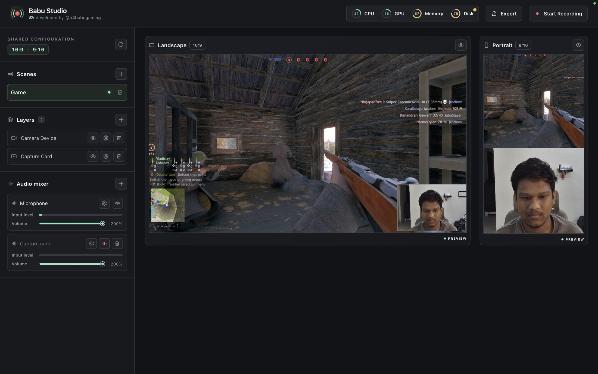
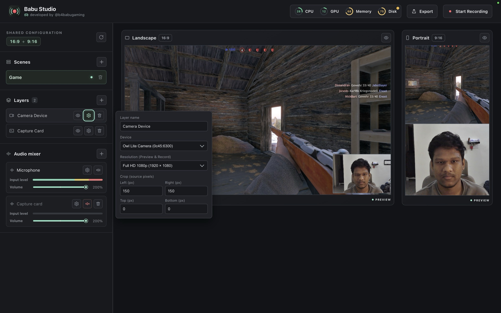
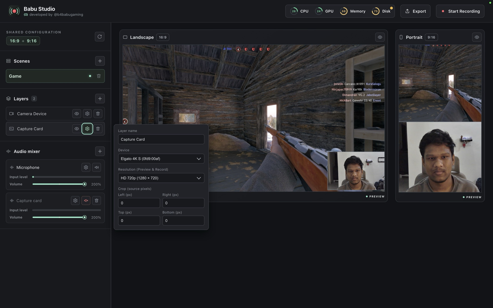
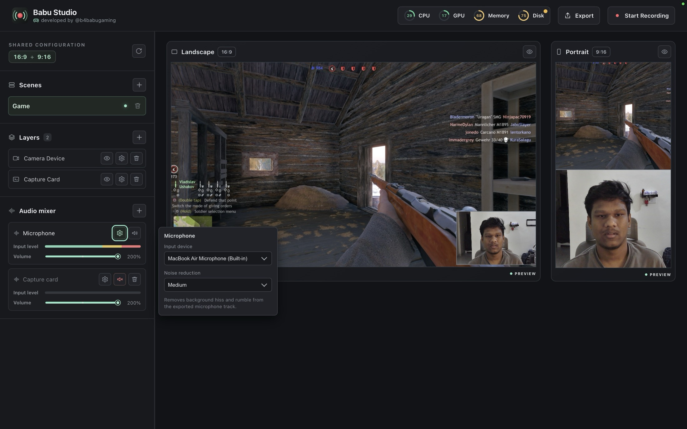
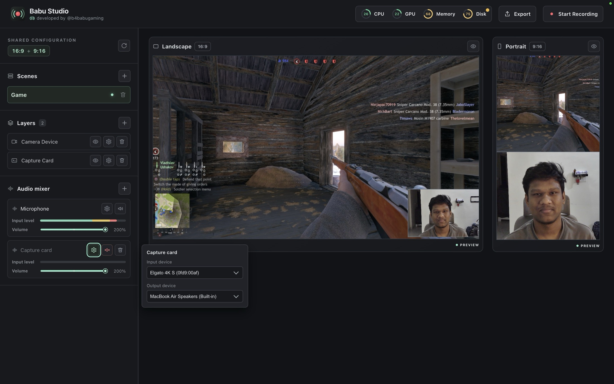
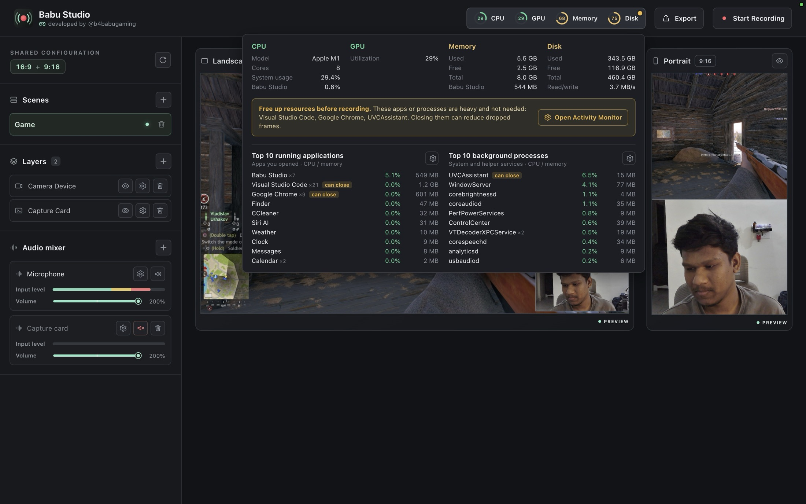
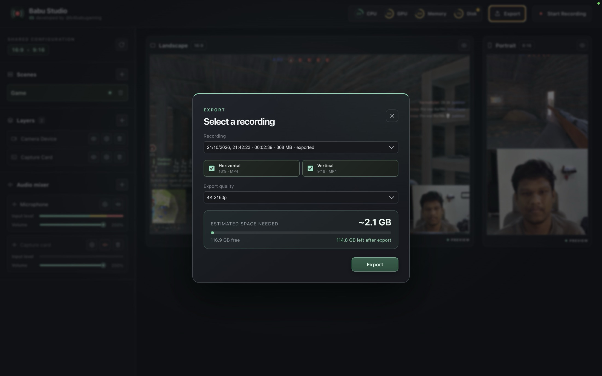
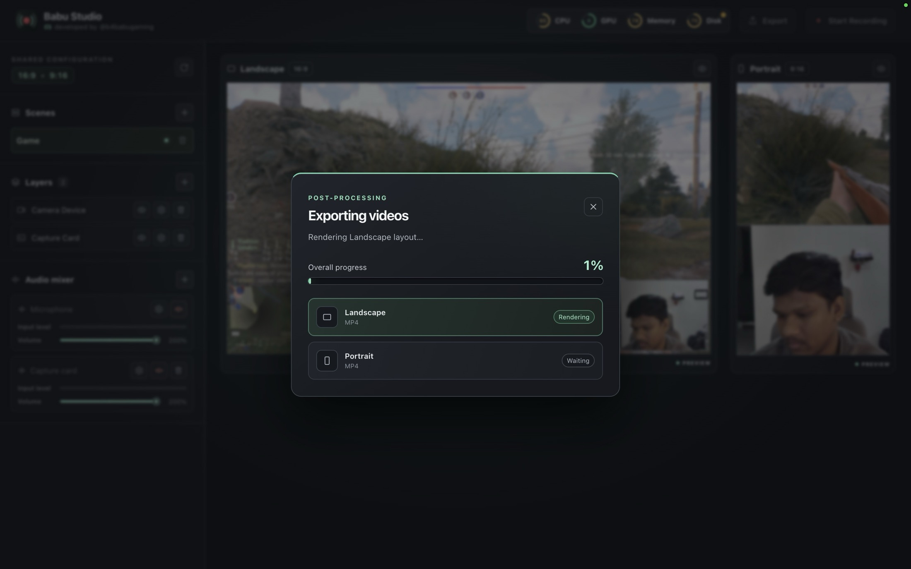

Two formats, one recording
Landscape 16:9 and portrait 9:16 previews update live side by side, so you frame both before you hit record.
Free & open source · macOS
Babu Studio records your capture card, webcam and microphone in sync, then exports horizontal 16:9 and vertical 9:16 videos in a single pass.
Free · macOS 12 or newer · All releases
Not sure which one? Click the Apple menu → About This Mac. “Chip: Apple M…” means Apple Silicon. “Processor: Intel” means Intel.

Features
Built for creators who stream or record gameplay with a capture card and a webcam, and publish to both YouTube and Shorts, Reels or TikTok.
Landscape 16:9 and portrait 9:16 previews update live side by side, so you frame both before you hit record.
Layer console or PC gameplay with your camera. Set resolution and crop each source in pixels.
A mixer with live levels, volume up to 200% and noise reduction for background hiss and rumble.
Live CPU, GPU, memory and disk readouts flag heavy apps to close first, so you avoid dropped frames.
Choose horizontal, vertical or both, pick a quality, and see the disk space needed before you start.
Every release is built from public source by GitHub Actions, malware-scanned, and published with checksums.
How it works
Add your capture card, camera and microphone as layers. Position and crop them once for both layouts.
Hit Start Recording. Video and audio stay in sync while the monitor keeps an eye on your Mac.
Render landscape and portrait MP4s together, ready for YouTube, Shorts, Reels and TikTok.
Screenshots
Set up your scene once, record, and export finished videos for every platform. Here is a quick tour of the app. Click any screenshot to view it full size.







Demo
The same recording, exported in both layouts.
Get started
.dmg that matches your Mac..dmg and drag Babu Studio into Applications.FFmpeg is included. You don’t need to install anything else.
Babu Studio is free and isn’t notarized by Apple yet, so macOS Gatekeeper blocks the first launch. The app is open source, and you can read the code in the repository. Pick the option for your macOS version.
If the steps above don’t work, remove the download quarantine flag:
xattr -dr com.apple.quarantine "/Applications/Babu Studio.app"Don’t change “Allow applications from” to “Anywhere”. Only the single app needs to be allowed, as above.
Trust
Every release is built from the public source by GitHub Actions, scanned for malware, and published with checksums. You can check your download yourself.
clamav-scan.log.SHA256SUMS.shasum -a 256 ~/Downloads/Babu-Studio-arm64.dmg
gh attestation verify ~/Downloads/Babu-Studio-arm64.dmg --repo babu-studios/babu-studio-appFAQ
Yes. It is free and open source. You can read and build the code from the GitHub repository.
Use the build that matches your chip. The Intel build runs on Apple Silicon only through Rosetta and is slower.
No. FFmpeg and the libraries it needs are bundled with the app.
Run the Terminal command from Allow the app to open to remove the quarantine flag.
Open System Settings → Privacy & Security → Camera / Microphone, turn on Babu Studio, then restart the app.
Open an issue with your macOS version, chip, capture devices, and steps to reproduce.
Download Babu Studio for free and export landscape and portrait videos from a single recording.